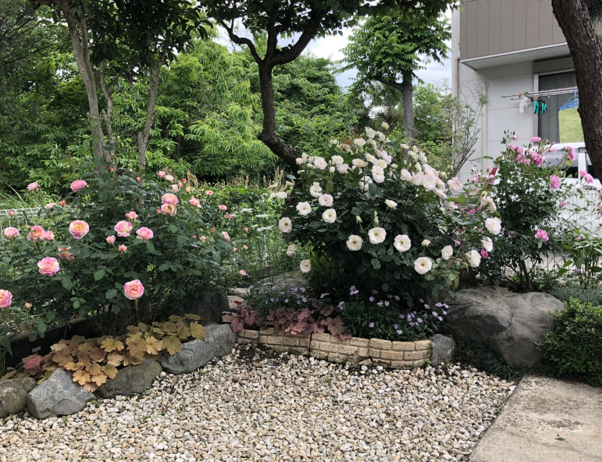
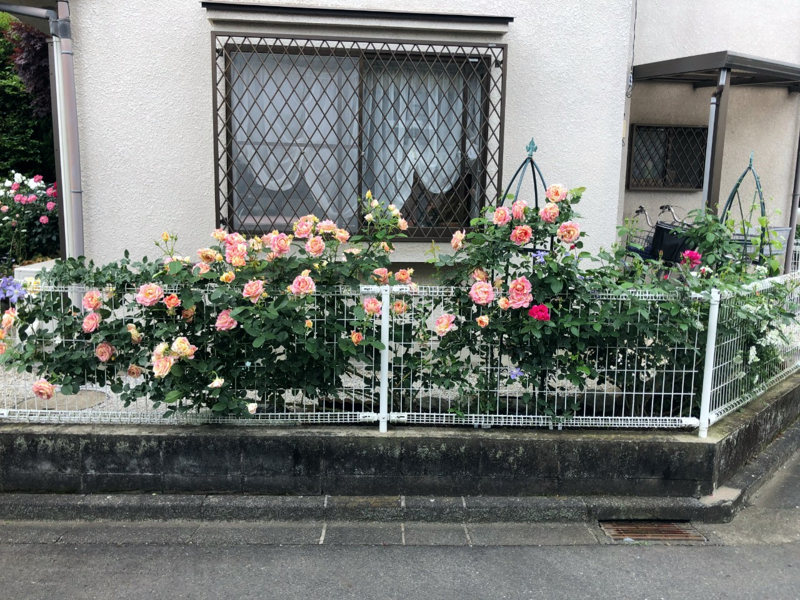
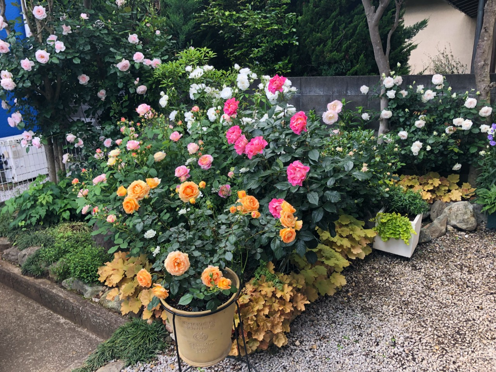

庭の紹介 new!
庭の写真
玄関前

玄関が北側に位置しており、この場所は日当たりが悪いです、植物が成長する環境に適していないので、白い石を置き、少しでも明るくしたり、間隔をあけて風通しをよくさせています。また、隣の家に迷惑が掛からないように、隣の家との境には、植物を植えないようにしています。左側に植わっているバラは、“クロードモネ”というフランスのデルバール社のバラです。コンパクトで四季咲性が強く、通るたびに甘い紅茶の香りがします。その奥のフェンスに絡めているのは、“フォームアンドガーデン”です。このバラは強く、多少環境が悪くても育ってくれます。中央に植わっているバラは“マチルダ”という古くからあるバラです。驚くほどの連続開花性があり、いつもさ玄関前を賑やかに彩ってくれます。右側に植わっているバラは、“ピンクアイスバーグ”というバラです。このバラは、どこのバラ園でも植えられているほど有名なアイスバーグの枝替わり品種です。四季咲性が強いです。
フェンス

フェンスは東側に位置しており、風通しもよく、我が家では一番の植物が育つ良い環境であるといえます。そのため、ここには、病気にかかりやすいがとても華やかなバラを植えています。左側に植わっているバラは“ポールセザンヌ”です。黄色とピンクの絞りのバラで、とても香りがよく、大輪の華やかなバラです。右側に植わっているバラは“ギーサヴォア”です。このバラはポールセザンヌが満開になるころに咲き始めます。こちらも赤とピンクの絞りのバラで、香りもとても良いです。この二品種は、道路に面しており人通りが多いため、香りが良く、めずらしいバラを植えることを心がけています。
庭

庭は南側に位置しており、隣の家があるため、日が当たる場所が限らています。そのため、よく日の当たる場所にはバラを、日陰にはアジサイを植えています。左上に植わっているバラは“ローズドゥグランヴィル”です。日陰部分に植えてあるため、木に添わせて上の方で咲かしています。とても丈夫なバラで、デザイナーのクリスチャンディオールがこよなく愛したバラです。このバラの手前に植わっているのが、玄関前にも植わっている“クロードモネ”です。そのバラの横に植わっているバラが、“ピンクパラダイス”です。手前に植えているので、コンパクトでとても香りの良いバラです。このバラの後ろにあるバラが“アイスバーグ”です。純白で絶え間なく咲きます。そして、ピンクパラダイスの右にあるバラが、“ニンファ”です。日本の育種家である木村卓功さんが作ったバラです。我が家で一番早く咲いてくれます。そのニンファの前にあるバラが“ガーデンオブローゼズ”です。この写真では、まだつぼみの段階ですが、遅咲き品種であるため、ほかのバラよりも遅く咲きます。丈夫で、手間いらずで、ADRという賞を受賞しています。手前の鉢に植わっているバラは、“ラ・ドルチェ・ヴィータ”です。このバラは、鉢で植えてあるため、コンパクトで四季咲性が強く、絶え間なく咲いてくれます。香りもとても良いです。そして右にあるバラが“ボレロ”です。濃厚なフルーツの香りが感じられ、日陰ですが、耐病性に優れ、良く咲いてくれます。
毎日のルーティーン
04:30 起床
05:00~05:15 水やり
05:15~05:30 草むしり
09:00~16:00 パート
17:00~17:20 花殻摘み
17:00~17:50 花を摘み、花瓶に生ける